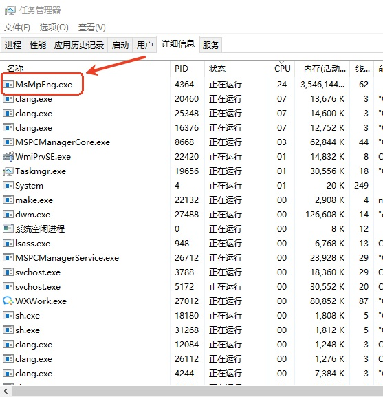
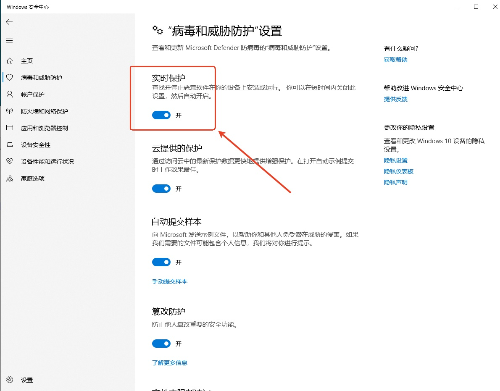
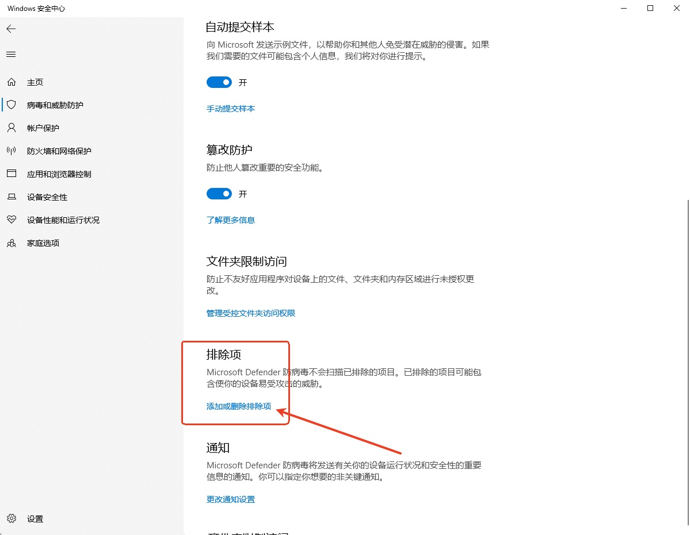
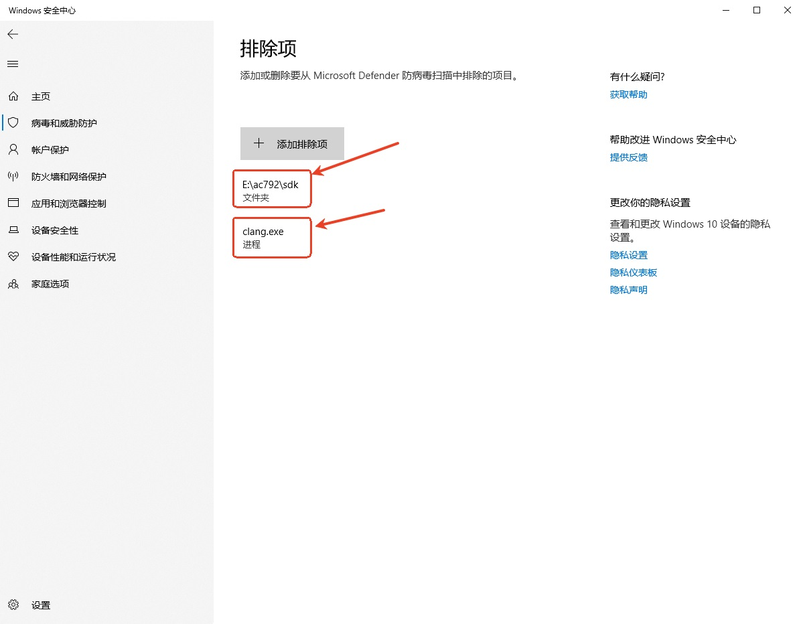
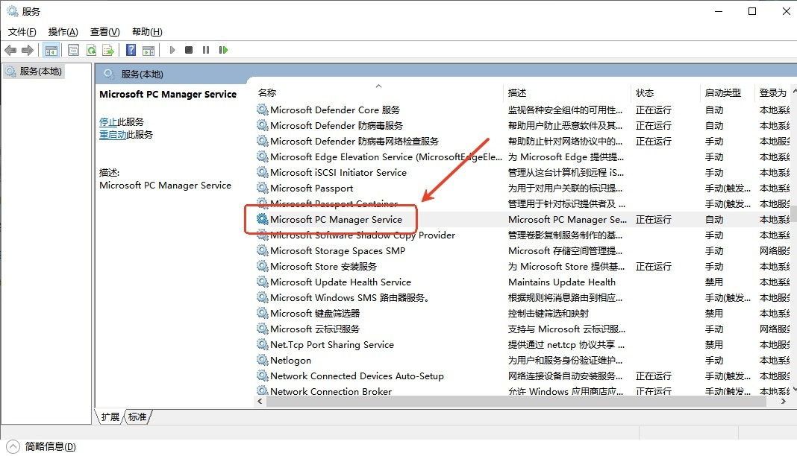

4.1.10. How to Reduce Build Time on Windows
SDK build time is affected by system settings and security software (such as antivirus software and file encryption software).
If SDK builds are slow on Windows, you can change the system configuration as described below to reduce the build time.
4.1.10.1. Change the antivirus software settings
While the SDK is building, you can open the Windows Task Manager to see which processes have high CPU usage.
In the example below, the process of the antivirus software built into Windows, MsMpEng.exe, has the highest CPU usage

In that case, you can try changing the security policy of the antivirus software to reduce the build time.
Because there are so many antivirus products for Windows, this article uses only the antivirus software built into Windows as an example to show how to change the antivirus security policy
Turn off the
Real-time protectionfeature of the antivirus softwareIf your development environment is relatively closed and secure, you can simply turn off the
Real-time protectionfeature of the antivirus software.In Windows Security, open
Virus & threat protection settings("病毒和威胁防护"设置) and turn offReal-time protection(实时保护), as shown below:
After turning off
Real-time protection, we built thewifi_cameraproject of theAC792N SDKfrom the command line on the author's test computer as an example:The build time was reduced by about 20%.
Build time with
real-time protection on:
Note
!!! Build succeeded !!!
make[1]: Leaving directory ‘E:/ac792/sdk/apps/wifi_camera/board/wl83’
Start time: 2025/12/31 Wed 14:57:28
End time: 2025/12/31 Wed 14:59:52
Total time: 0 h 2 min 24 s (144 s in total)Build time with
real-time protection off:
Note
!!! Build succeeded !!!
make[1]: Leaving directory ‘E:/ac792/sdk/apps/wifi_camera/board/wl83’
Start time: 2025/12/31 Wed 15:05:23
End time: 2025/12/31 Wed 15:07:14
Total time: 0 h 1 min 51 s (111 s in total)Add the compiler process and the SDK directory to the antivirus whitelist
If your development environment frequently needs to connect to the Internet, we recommend adding the
compiler processand theSDK directoryto the antivirus whitelist, as shown below:In Windows Security, open
Virus & threat protection settings("病毒和威胁防护"设置), find theExclusions(排除项) setting and clickAdd or remove exclusions(添加或删除排除项), as shown below:
Add the compiler process clang.exe and the SDK path to the exclusions, as shown below:

After the exclusions were added, the build time was reduced by about 17%.
Build time after
adding the exclusions:
Note
!!! Build succeeded !!!
make[1]: Leaving directory ‘E:/ac792/sdk/apps/wifi_camera/board/wl83’
Start time: 2025/12/31 Wed 15:52:57
End time: 2025/12/31 Wed 15:54:57
Total time: 0 h 2 min 0 s (120 s in total)
4.1.10.2. Disable the Microsoft PC Manager Service
After certain Windows updates are installed, SDK builds may become very slow. In that case, follow the steps below.
Find Microsoft PC Manager Service in the system services, then stop and disable this service, as shown below:

After Microsoft PC Manager Service has been stopped:
In Task Manager, check that the processes of the service, MSPCManagerService.exe, MSPCManagerCore.exe and MSPCManager.exe, no longer exist.